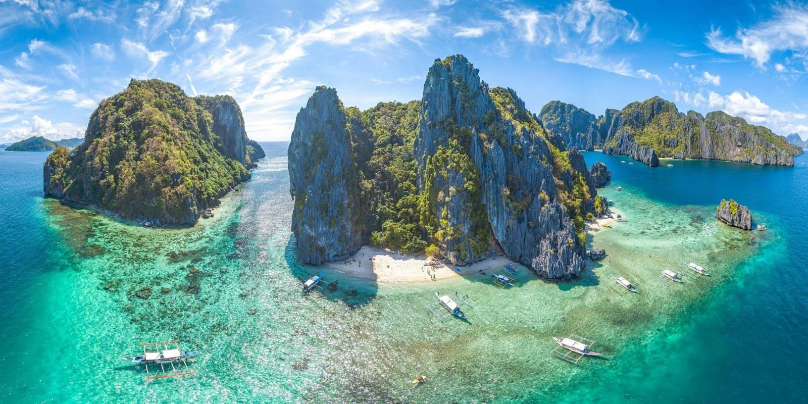

Goal Destinations!
Cat Island
Aoshima, Japan
 |
- Population: Fewer than 20 people, but more than 100 cats!
- Latitude: 33.74 ºN
- Longitude: 132.53 ºE
Aoshima, commonly known as "Cat Island," is a small island in Japan where cats outnumber humans by a significant margin.
Once a thriving fishing community, the island's human population has dwindled over the years, leaving behind only a handful of elderly residents.
The cats, originally brought to the island to control the rodent population, have since proliferated and become the island's most famous inhabitants.
Aoshima has gained international attention as a quirky and unique destination for cat lovers, where visitors can interact with the friendly felines
that roam freely throughout the island. The island's serene atmosphere, combined with the charming presence of so many cats, makes it a one-of-a-kind
experience for those who visit.
Sea of Stars
Vaadhoo Island, Maldives Republic

- Population: 521,457 people
- Latitude: 3.4707° N
- Longitude: 73.5012° E
The Sea of Stars on Vaadhoo Island in the Maldives is famous for a mesmerizing natural phenomenon known as bioluminescence.
This occurs when marine microorganisms called phytoplankton emit light in response to movement in the water, creating the illusion
of a starry sky on the ocean's surface. The glowing waves are a breathtaking sight, particularly on moonless nights, and attract
nature enthusiasts and photographers from all over the world. The Maldives, with its pristine beaches and crystal-clear waters,
is already a paradise for travelers, and the Sea of Stars adds an extra layer of magic to the experience.
New York
United States

- Population: 8 Million aprox.
- Latitude: 40.7128° N
- Longitude: 74.0060° W
TNew York City, often referred to as "The Big Apple," is one of the most iconic and influential cities in the world.
It is a global hub for finance, culture, and entertainment, home to landmarks like the Statue of Liberty, Central Park,
and Times Square. The city is renowned for its towering skyscrapers, such as the Empire State Building and One World Trade Center,
as well as its diverse neighborhoods, each offering a unique cultural experience. New York City also boasts world-class museums,
theaters, and restaurants, making it a top destination for travelers from around the globe.
Alsace
France

- Population: 1.8 Million aprox.
- Latitude: 48.3182° N
- Longitude: 7.4416° E
Alsace is a picturesque region in northeastern France, nestled along the border with Germany.
Known for its charming villages with half-timbered houses, Alsace is a region where history and culture come alive.
The area is famous for its scenic Wine Route, which winds through rolling vineyards and medieval towns like Riquewihr
and Eguisheim. Strasbourg, the capital of Alsace, is home to the stunning Strasbourg Cathedral and the historic
Petite France district. Colmar, another highlight, is often described as a fairy-tale town due to its well-preserved
old town and romantic canals. Alsace's unique blend of French and German influences is evident in its architecture, cuisine, and traditions.
Puerto Princesa
Philippines

- Population: 307,000 PROX.
- Latitude: 9.7638° N
- Longitude: 118.7470° E
TPuerto Princesa, the capital of the island province of Palawan, is a gateway to some of the Philippines' most stunning natural wonders.
The most famous of these is the Puerto Princesa Subterranean River National Park, a UNESCO World Heritage Site and one of the
New Seven Wonders of Nature. This underground river winds through a vast limestone cave system, offering visitors a chance to
explore its majestic stalactites and stalagmites by boat. The area around Puerto Princesa is also known for its beautiful beaches,
lush forests, and vibrant marine life, making it a paradise for eco-tourism and adventure activities such as diving, snorkeling, and hiking.